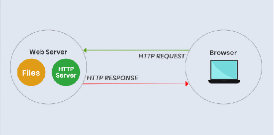

What is the World Wide Web? How does it work?
The World Wide Web (WWW) is an online system based around the Internet, that allows for the identification, interconnection and retrieval of information that is uploaded across the Internet, able to be publicly downloaded and/or viewed. That is to say, that it provides a way for information to be accessed publicly using the Internet, utilising a number of technologies. Information is displayed on sites built using HTML, or Hypertext Markup Language, which is the most commonly known and used coding language, which is used to create and program sites to display information. All sites come with a custom URL, or Uniform Resource Identifier, which is used as a way to uniquely identify every website created within a context that is suited for and enables the function of the World Wide Web. Simply put, a URL is a way for websites to identify themselves in the World Wide Web, and each website owns a unique URL. The Hypertext Transfer Protocol is a protocol that acts as a way for users to access websites and visit HTML codes with their URLs. Basically, the HTTP is the thing that allows computers and other devices that can access the World Wide Web, to view web pages through sending you to the page you were looking for when you found the link to the HTML website.
What are the roles of web servers?
Web servers are used to store information and files regarding the makeup of a webpage or website, like the HTML code and CSS sheet, and waits for a user who is requesting that page or information. Then the web server grants the user access to those pages, and acts as a HTTP server to direct the user to the page. Essentially, the page is stored on a web server, as well as the permission or ability to access it. They keep a webpage’s information and makeup, and are also responsible for granting access to the user for the page. Without web servers, we would not be able to upload any information onto the World Wide Web, let alone access or even view that information.
What are web browsers?
A web browser is a software program that allows the user to access the Internet. More specifically, it provides an interface for the user to use, which allows the interaction of the World Wide Web. Through a web browser, the user can now interact with the World Wide Web, web pages, search engines and other applications that might be available. The web browser is the way in which users perceive the World Wide Web, and allows for people to access the World Wide Web, web pages, search engines and other applications.
How is the World Wide Web different to the Internet?
The World Wide Web is different to the Internet, as while the Internet is the name we give to the vast public domain of interconnected computers that we use, the World Wide Web is not the name of those collection of interconnected computers, but rather is a system online utilising the Internet, that allows for the display, identification of and access to information. The Internet provides a way for a vast number of computers to be connected at once. The World Wide Web uses this connection and other technologies to provide a way for information to be shared. The World Wide Web is merely a software program which uses the Internet to function, whereas the Internet is the means of function for the World Wide Web. Without the Internet, the World Wide Web cannot exist or function. However, without the World Wide Web, the Internet does not have much substance, and therefore little use to users.
What is an Intranet?
An Intranet is a way to privately communicate with others who can access the Intranet. It comes in the form of a computer network only accessible through certain devices with keys or passwords or other means of access. It serves as a private hub and base of communications for certain individuals who have a password or are allowed access through other means. Instead of having a social media group to chat with others, an Intranet provides a more private environment for people to communicate in.
How does the Intranet relate to the Internet?
While the Internet is a computer network that can be publicly accessed by anyone with a device connected to it, an Intranet is one that not all computers are immediately connected to, but rather can only be connected to through a special key or password which is sent to the user. Simply put, an Internet is a public network whilst an Intranet is a private network, set up by a company or organization to send files and other information discretely and without the knowledge of the Internet. The Internet and Intranet utilise the same concept with very similar execution, but the Internet is the public domain of interconnected computers that all devices can connect to, whereas the Intranet is the exclusive private domain of interconnected computers and devices, that only a select few users have access to.
What is an Internet Protocol?
An Internet Protocol can be thought of as a set of standardized regulations or rules placed regarding the Internet and a particular element or requirement regarding the data which is sent to the Internet. These protocols are usually governed and created by the IETF (Internet Engineering Task Force) and the Internet Society, as the organizations responsible for the changes made to and the regulation of the Internet. These protocols collectively are responsible for many things, such as the postage, retrieval and identification of data and information on the Internet, just to list three things. When looking at HTTP (Hypertext Transfer Protocol), TCP/IP (Transmission Control Protocol/Internet Protocol) and FTP (File Transfer Protocol), they all share the common fact that all three of these protocols regard information on the Internet and allow for the transportation of different types of information from one point on the Internet to another. However, all of these protocols serve a different purpose.
HTTP
TCP/IP
The HTTP is responsible for the transfer of hypertext. In other words, it allows you to communicate with other hypertext files in order to view them on the Internet. These hypertext files are most commonly seen as HTML files, or Hypertext Markup Language files, which are also known as webpages. The HTTP allows computers to communicate with servers to send and receive hypertext messages. The computer sends a hypertext request to a server, which then is received and can be granted by the server, which in this case is now sending back HTML files for the computer to view. This alone could be described as the basis of the World Wide Web, as it allows for the exchange of webpages and information through hypertext.FTP
The FTP (File Transfer Protocol) is responsible for the movement and transfer of files across the Internet. With FTP, users are able to send and receive files and information across the Internet. The FTP is working in conjunction with the TCP/IP servers, as FTP can only work under TCP/IP servers. FTP usually consists of two things, the server and user, as are most other protocols. Files are hosted and stored within the servers, more specifically in a specific folder on the server. Then, others can access the files on the server to do things like transfer or copy the files onto their own device or server. Simply put, there is a large server with lots of folders, containing many different files and other types of information. With this, people are able to freely access these files and are able to either upload new files to the server in a folder for other people’s use, or download already existing files within the folder to use for themselves. The FTP protocol is most commonly seen in the form of downloadable softwares and programs that allow users to connect to certain FPT servers and upload or download different files stored on the servers, which may be used by companies or organizations as another way of sharing information and classifying them in folders or other storages.